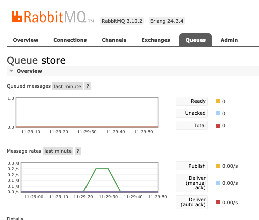

RabbitMQ
This page is an overview of how petisco helps us on Message Broker development using RabbitMQ as message broker. Currently, petisco provides a RabbitMQ implementation on top of pika framework.
1. Terminology¶
This glossary joins domain ubiquitous language with the specific implementation using RabbitMQ.
| Name | Description | More Info |
|---|---|---|
Publisher |
Application (or application instance) that publishes messages (e.g domain events and commands). Also called producer. | https://www.rabbitmq.com/publishers.html |
Message Broker |
Intermediary application that translates a message from the formal messaging protocol of the sender (publisher/producer) to the formal messaging protocol of the receiver (subscriber/consumer). | - |
Exchange |
"Messages are not published directly to a queue. Instead, the producer sends messages to an exchange. Exchanges are message routing agents, defined by the virtual host within RabbitMQ. An exchange is responsible for routing the messages to different queues with the help of header attributes, bindings, and routing keys." | https://www.cloudamqp.com/blog/part4-rabbitmq-for-beginners-exchanges-routing-keys-bindings.html |
Queue |
"A queue is a sequential data structure with two primary operations: an item can be enqueued (added) at the tail and dequeued (consumed) from the head. Queues play a prominent role in the messaging technology space: many messaging protocols and tools assume that publishers and consumers communicate using a queue-like storage mechanism." | https://www.rabbitmq.com/queues.html |
Subscriber |
Application (or application instance) that consumes messages (e.g domain events and commands) from a queue and handles a derived action. Also called consumer or handler. | - |
Find several RabbitMQ tutorials in https://www.rabbitmq.com/getstarted.html.
sequenceDiagram
participant Publisher
participant Exchange
participant Queue
participant Subscriber
autonumber
Publisher->>Exchange: Message
Exchange->>Queue: Message
Note over Exchange,Queue: Based on exchange rules (bindings)
Subscriber->>Queue: Read Message
Subscriber-->>Queue: ack
Note over Queue: Remove message2. Example¶
In examples/rabbitmq you can find several scripts to interact with RabbitMQ. To test how petisco can help you on message management you need to run locally a RabbitMQ application.
- Run RabbitMQ with docker. You can check the RabbitMQ status on http://localhost:15672/#/ (guest:guest). Please, check the official doc here.
- Clone the project
- Create a python environment and install petisco
- Configure the exchanges and queues. This script will configure common queues and specific queues to support subscriptions (domain event and command consumers/handlers).
- Start consuming messages from Queues. This script will execute a continuous process to consume every message on subscribed queues.
- Publish domain events.
- Dispatch commands.
These examples can help you to start playing with rabbitmq and to understand how it works in petisco. It is strongly recommended to check local rabbitmq at http://localhost:15672/#/ (as mentioned above) to review the activity of queues and exchanges.

In addition, there are three useful scripts (clear.py, clear_subscribers.py, configure_with_clear_before.py) for
play with queue management and some administration tools for removing or renewing exchanges and queue configurations.
If you want to go deeper into how messages are queued in rabbitmq, you can review the concepts of bindings, routing_keys and dead_letters.
3. Configurations¶
Some configurations are managed by the classes and examples seen above, others can be configured with the following environment variables.
RABBITMQ_HEARTBEAT: (default: 60 s)RABBITMQ_USER: (default: guest)RABBITMQ_PASSWORD: (default: guest)RABBITMQ_HOST: (default: localhost)RABBITMQ_HOST: (default: 5672)RABBITMQ_CONNECTION_NUM_MAX_RETRIES: (default: 15)RABBITMQ_CONNECTION_WAIT_SECONDS_RETRY: (default: 1)RABBITMQ_MESSAGE_TTL: (default 1000 ms) If a queue is already created it will generate a precodition failure.
4. CLI Tools¶
Note
Since version v1.7.0, petisco have available the cli command petisco-rabbitmq to consume domain events and requeue them.
Imagine you have some events in a dead letter queue. To reproduce, you can configure your rabbitmq and publish some events without launching a consumer.
To requeue event from queues, just use the petisco-rabbitmq
>> petisco-rabbitmq --help
usage: petisco-rabbitmq üç™ [-h] [-rq] [-cq CONSUMING_QUEUES] [-o ORGANIZATION] [-s SERVICE] [-mr MAX_RETRIES] [-rttl RETRY_TTL] [-wtr WAIT_TO_REQUEUE]
petisco-rabbitmq helps us on rabbitmq iteration
optional arguments:
-h, --help show this help message and exit
-rq, --requeue requeue
-o ORGANIZATION, --organization ORGANIZATION
Name of the organization
-s SERVICE, --service SERVICE
Name of the service
-cq CONSUMING_QUEUE, --consuming-queue CONSUMING_QUEUE
Queue to consume
-rrk RETRY_ROUTING_KEY, --retry-routing-key RETRY_ROUTING_KEY
Routing key to republish the message to specific retry queue
-ren RETRY_EXCHANGE_NAME, --retry-exchange-name RETRY_EXCHANGE_NAME
Exchange name to republish the message to specific exchange
-mr MAX_RETRIES, --max-retries MAX_RETRIES
Max Retries
-rttl RETRY_TTL, --retry-ttl RETRY_TTL
Retry TTL
-wtr WAIT_TO_REQUEUE, --wait-to-requeue WAIT_TO_REQUEUE
Wait to Requeue (seconds)
Examples:
- Example 1 (requeue events from
dead_letter.acme.registration.1.event.user_confirmed.send_sms_on_user_confirmed): - Example 2 (requeue events from
dead_letter.acme.registration.1.event.user_created.send_mail_on_user_created):
- Example 3 (requeue events from
dead_letter.store):
5. Code¶
Note
Base code is available in petisco/domain/message and specific implementation in petisco/extra/rabbitmq.
Some definition of domain base classes:
| Name | Description |
|---|---|
| Message | Define a basic Message using a base metaclass (MetaMessage) |
| DomainEvent | Defines a Domain Event inheriting from Message. You can define new attributes to add to the resultant encoded message. |
| Command | Defines a Command inheriting from Message. You can define new attributes to add to the resultant encoded message. |
| MessageBus | Interface which defines the contract of a message bus to publish messages |
| DomainEventBus | Interface which defines the contract of domain event bus to publish DomainEvent. It inherits from MessageBus |
| CommandBus | Interface which defines the contract of command bus to dispatch Command. It inherits from MessageBus |
| MessageSubscriber | Interface which defines the contract of a subscriber using a base metaclass (MetaMessageSubscriber) |
| DomainEventSubscriber | Interface which defines the contract of DomainEvent hanlders. It inherits from MessageSubscriber |
| CommandSubscriber | Interface which defines the contract of Command hanlders. It inherits from MessageSubscriber |
| AllMessageSubscriber | Interface which defines the contract of every message (e.g DomainEvent and Command) hanlders. It inherits from MessageSubscriber |
| MessageConfigurer | Interface which defines the contract of message configurer |
| MessageConsumer | Interface which defines the contract of message consumers |
Some RabbitMQ implementations:
| Name | Description |
|---|---|
| RabbitMqConnector | Singleton class to define RabbitMQ connector and set its configurations. |
| RabbitMqDomainEventBus | RabbitMQ implementation of DomainEventBus to publish DomainEvents. |
| RabbitMqCommandBus | RabbitMQ implementation of CommandBus to dispatch Commands. |
| RabbitMqMessageConfigurer | RabbitMQ implementation of MessageConfigurer, which configures exchanges, queue bindings and routing keys from defined MessageSubscribers |
| RabbitMqMessageConsumer | RabbitMQ implementation of MessageConsumer to add subscribers, and start a thread to consume message from defined subscribers |
classDiagram
class RabbitMqConnector
RabbitMqConnector: +close()
RabbitMqConnector: +get_connection()
RabbitMqConnector: +get_channel()
class MessageConfigurer
MessageConfigurer: +configure_subscribers()
MessageConfigurer: +clear()
class MessageConsumer
MessageConsumer: +add_subscribers()
MessageConsumer: +add_subscriber_on_dead_letter()
MessageConsumer: +add_subscriber_on_queue()
MessageConsumer: +unsubscribe_subscriber_on_queue()
MessageConsumer: +resume_subscriber_on_queue()
MessageConsumer: +start()
MessageConsumer: +stop()
class MessageSubscriber
MessageSubscriber: +subscribed_to()
MessageSubscriber: +handle()
MessageSubscriber: +set_domain_event_bus()
MessageSubscriber: +set_command_bus()
MessageSubscriber: -get_subscriber_name()
MessageSubscriber: -get_message_subscribers_info()
class Message
Message : +Uuid message_id
Message : +str name
Message : +int version
Message : +datatime oscurred_on
Message : +dict attributes (ready to compose)
Message : +dict meta (ready to add info id, e.g correlation_id, client_id)
Message: +str type
class MessageBus
MessageBus : +publish()
class DomainEventBus
DomainEventBus : +publish()
class CommandBus
CommandBus : +dispatch()
DomainEvent --|> Message
Command --|> Message
DomainEventBus --|> MessageBus
CommandBus --|> MessageBus
DomainEventBus --* DomainEvent
CommandBus --* Command
MessageConsumer --* MessageSubscriber
RabbitMqMessageConfigurer --|> MessageConfigurer
RabbitMqMessageConsumer --|> MessageConsumer
RabbitMqDomainEventBus --|> DomainEventBus
RabbitMqCommandBus --|> CommandBus
RabbitMqMessageConfigurer --* RabbitMqConnector
RabbitMqMessageConsumer --* RabbitMqConnector
RabbitMqDomainEventBus --* RabbitMqConnector
RabbitMqCommandBus --* RabbitMqConnector RabbitMQ in your Application¶
To add RabbitMQ to your application, you need to define your message dependencies and configure them to start consuming messages:
from petisco.extra.rabbitmq import get_rabbitmq_message_dependencies
ORGANIZATION = "acme"
SERVICE = "my-app"
# Define RabbitMQ dependencies
def dependencies_provider() -> list[Dependency]:
...
message_dependencies = get_rabbitmq_message_dependencies(ORGANIZATION, SERVICE)
dependencies += message_dependencies
---
return dependencies
from petisco.extra.rabbitmq import RabbitMqConfigurer, DomainEventSubscriber
# Define RabbitMQ configurers
class SendSmsOnUserCreated(DomainEventSubscriber):
def subscribed_to(self) -> list[type[DomainEvent]]:
return [UserCreated]
def handle(self, domain_event: UserCreated) -> BoolResult:
## do your stuff
return isSuccess
configurers = [
RabbitMqConfigurer(
subscribers=[SendSmsOnUserCreated]
)
]
application = Application(
name=SERVICE,
version="1.0.0",
organization=ORGANIZATION,
deployed_at=str(datetime.utcnow()),
environment="staging",
dependencies_provider=dependencies_provider, # <==== Adding dependencies ➕
configurers=configurers # <==== Adding configurers ➕
)
application.configure()
This code will start consuming message and calling your defined subscribers for your defined SERVICE (name of your
application). If you want to subscribe to messages from, for example, other service you can do it quite similar using
alias:
from petisco.extra.rabbitmq import get_rabbitmq_message_dependencies
ORGANIZATION = "acme"
SERVICE = "my-app"
OTHER_SERVICE = "my-other-app"
# Define RabbitMQ dependencies
def dependencies_provider() -> list[Dependency]:
...
message_dependencies = get_rabbitmq_message_dependencies(ORGANIZATION, SERVICE)
dependencies += message_dependencies
---
other_message_dependencies = get_rabbitmq_message_dependencies(
ORGANIZATION,
OTHER_SERVICE,
alias="other"
)
dependencies += other_message_dependencies
return dependencies
from petisco.extra.rabbitmq import RabbitMqConfigurer, DomainEventSubscriber
# Define RabbitMQ configurers
class SendSmsOnUserCreated(DomainEventSubscriber):
def subscribed_to(self) -> list[type[DomainEvent]]:
return [UserCreated]
def handle(self, domain_event: UserCreated) -> BoolResult:
## do your stuff
return isSuccess
configurers = [
RabbitMqConfigurer(
subscribers=[SendSmsOnUserCreated]
)
RabbitMqConfigurer(
subscribers=[SendSmsOnUserCreated]
configurer_alias="other",
consumer_alias="other",
)
]
application = Application(
name=SERVICE,
version="1.0.0",
organization=ORGANIZATION,
deployed_at=str(datetime.utcnow()),
environment="staging",
dependencies_provider=dependencies_provider, # <==== Adding dependencies ➕
configurers=configurers # <==== Adding configurers ➕
)
application.configure()
With this configuration the application will handle UserCreated message from the main service (SERVICE=my-app) and
also from the other service (SERVICE=my-other-app) using the following configurer queues:
alice.my_app.1.user_created.send_sms_on_user_created: SendSmsOnUserCreated will handle domain event published by themy_appservice.alice.my_other_app.1.user_created.send_sms_on_user_created: SendSmsOnUserCreated will handle domain event published by themy_other_ºrrappservice.
Note
Imagine your are consuming from a ORGANIZATION="acme" and SERVICE="my-app and you want to publish a derived domain
event in your subscriber. You can do it with the inner domain_event_bus (this pre-loaded domain event bus is already
configured and shares connection to avoid thread errors)
class UserSmailed(DomainEvent): ...
class SendSmsOnUserCreated(DomainEventSubscriber):
def subscribed_to(self) -> list[type[DomainEvent]]:
return [UserCreated]
def handle(self, domain_event: UserCreated) -> BoolResult:
self.domain_event_bus.publish(UserSmiled())
return isSuccess
And maybe you don't want to publish to the same exchange acme.my-app (from {ORGANIZATION}.{SERVICE}) and you want to
publish to petisco.my-other-service. So you can configure this inner bus using RabbitMqConfigurer parameters:
INNER_BUS_ORGANIZATION = "petisco"
INNER_BUS_SERVICE = "my-other-service"
configurers = [
RabbitMqConfigurer(
subscribers=[SendSmsOnUserCreated]
inner_bus_organization=INNER_BUS_ORGANIZATION,
inner_bus_service=INNER_BUS_SERVICE
)
]
application = Application(
name=SERVICE,
version="1.0.0",
organization=ORGANIZATION,
deployed_at=str(datetime.utcnow()),
environment="staging",
dependencies_provider=dependencies_provider, # <==== Adding dependencies ➕
configurers=configurers # <==== Adding configurers ➕
)
application.configure()
Testing¶
Best way to learn how to use petisco to manage messages is with the examples defined above and reviewing the petisco test suite (check these folders: messages and + rabbitmq)
You can run this tests using:
Warning
Tests checks rabbitmq availability. If a local rabbitmq is not available, some tests will be skipped.
Code explained¶
- Create a domain event.
Define a
DomainEventin petisco is as easy as: -
Configure RabbitMQ. Now, you can configure a subscriber, for example, we can use the
send_mail_handlersubscriber from the example below.from petisco import DomainEvent, MessageSubscriber from petisco.extra.rabbitmq import RabbitMqConnector, RabbitMqMessageConfigurer from meiga import Result, Error, isSuccess, isFailure def send_mail_handler(domain_event: DomainEvent) -> Result[bool, Error]: # Do your stuff here return isSuccess # if fails, returns isFailure # Define Subscribers domain_event = UserCreated(user_id=Uuid.v4()) subscribers = [MessageSubscriber.from_message(domain_event, [send_mail_handler])] # Configure RabbitMQ Infrastructure with defined subscribers connector = RabbitMqConnector() organization = "acme" service = "registration" configurer = RabbitMqMessageConfigurer(connector, organization, service) configurer.configure_subscribers(subscribers)
- Start Consuming DomainEvents from RabbitMQ.
from petisco import MessageSubscriber, DomainEvent from petisco.extra.rabbitmq import RabbitMqConnector, RabbitMqMessageConsumer from meiga import Result, Error, isSuccess, isFailure def send_mail_handler(event: DomainEvent) -> Result[bool, Error]: # Do your stuff here return isSuccess # if fails, returns isFailure # Define Subscribers domain_event = UserCreated(user_id=Uuid.v4()) subscribers = [MessageSubscriber.from_message(domain_event, [send_mail_handler])] # Define RabbitMQ Consumer and start organization = "alice" service = "petisco" max_retries = 5 connector = RabbitMqConnector() consumer = RabbitMqMessageConsumer(connector, organization, service, max_retries) consumer.add_subscribers(subscribers) consumer.start() - Publish DomainEvents with the DomainEventBus
6. Advanced¶
Happy path of a message broker is shown in the following diagram.
Let's imagine a new service (registration) which produces domain events and some actions are derived from them
(managed by subscribers).
sequenceDiagram
participant Publisher
participant Exchange
participant Queue
participant Subscriber
Note over Publisher, Subscriber: Registration Example
autonumber
Publisher->>Exchange: UserCreated
Exchange->>Queue: UserCreated
Subscriber->>Queue: Read Message
Subscriber->>Subscriber: Send SMS to user
Subscriber-->>Queue: ack
Note over Queue: Remove messageHowever, when something is not correct on the subscriber, petisco/rabbitmq infrastructure performs some actions to
retry the execution. This will be the steps:
1. Subscriber read the message from queue (e.g. UserCreated)
2. Subscriber perform derived fails (e.g. send sms message when user is created)
3. As this derived action fails, subscriber returns a nack to the queue.
4. Now, the message is requeued to the retry queue.
* This waits a specific time (ttl) and message will be requeued n times (also configurable).
5. If derived action is not a success, message will be requeue to a dead letter queue.
sequenceDiagram
participant Publisher
participant Exchange
participant Queue
participant Subscriber
autonumber
Publisher->>Exchange: Message
Exchange->>Queue: Message
Note over Exchange,Queue: Based on exchange rules (bindings)
Subscriber->>Queue: Read Message
loop N TIMES
Subscriber->>Subscriber: Performs derived action
Subscriber-->>Retry Queue: nack
Note over Retry Queue: Message move to retry queue
Retry Queue-->>Retry Queue: Message
Note over Retry Queue: Wait Retry TTL
Retry Queue-->>Queue: Message
Note over Queue: Try again
end
Subscriber-->>Dead Letter Queue: Message
Note over Dead Letter Queue: Message move to dead letter queueQueue Naming¶
The queues naming uses the following convention:
<organization>.<service>.<version>.<type>.<event_name>.<action_handler>
where:
- organization is used for represent your company/team/project
- service is used for represent your service/application
- version is used for represent the version of the source event/command
- type is used for represent the type of source that triggers the process (event|command)
- event_name is used to represent the name of the event in snake case (
UserCreate->user.created) - action_handler is used to represent the name of the callback which will trigger the event (e.g
send_mail_handler)
How petisco takes advantage of RabbitMQ¶
Continuing with the registration example: imagine we are developing this system for an organization called acme).
We want to publish a domain event when the user create an account (UserCreated).
The registration service will react to this event storing the date (metrics are important) and performing some
derived action (e.g send_mail_handler). This event will be consumed by subscribers (derived actions that are executed
from associated events).
In our example, we are going to use two subscribers:
event_store: general subscriber. It can be useful for saving all domain events.send_mail_handler: It will send a mail onUserCreatedevent.
The following figure represents this use case:

What is happening here?
- The
DomainEventBuspublishes theUserCreateddomain event.- The routing key of this event is
acme.registration.1.event.user.created
- The routing key of this event is
- The exchange
acme.registration(. ) redirect the message using the binding keys (green) - The
storequeue receives the event perfectly :metal: - The
acme.registration.1.event.user.created.send_mail_handlerqueue gets theUserCreatedevent. - The
send_mail_handlerconsumer obtains the event perform the action:- If it is success: perfect, everything works nice and the queue will get an
ack:thumbsup: - Otherwise, if it is a failure: something is not working as expected or maybe we are suffering from overload. :fire:
* We need to recover from error, let's
acktoacme.registration.1.event.user.created.send_mail_handlerand requeue the info to the retry exchange (retry.acme.registration). * We select a number of maximun retries, as well as the time between retries (x-message-ttlonretry.acme.registration.1.event.user.created.send_mail_handlerqueue)
- If it is success: perfect, everything works nice and the queue will get an
- When the TTL expires on the retry queue, the message will be requeues automatically with the following parameters:
- x-dead-letter-exchange:
acme.registration - x-dead-letter-routing-key:
acme.registration.1.event.user.created.send_mail_handler
- x-dead-letter-exchange:
- Then, the process will return to 2, however in this case, only will be requed to
acme.registration.1.event.user.created.send_mail_handlerthanks to the additional binding keyretry.acme.registration.1.event.user.created.send_mail_handler.
Message Chaos¶
Info
Chaos engineering is the discipline of experimenting on a system in order to build confidence in the system's capability to withstand turbulent conditions in production. Wikipedia
Petisco allows you to force errors from the configuration of certain parameters by setting environment variables.
Message Bus¶
You can force fails in message publication in (for example in RabbitMqDomainEventBus and RabbitMqCommandBus).
| Environment Variable | Description | Default |
|---|---|---|
| PETISCO_CHAOS_PERCENTAGE_INVALID_MESSAGE_PUBLICATION | Percentage of invalid message publication. Where 1.0 means rejecting all the publishing messages. | 0.0 |
Helps
You can configure PETISCO_CHAOS_PERCENTAGE_INVALID_MESSAGE_PUBLICATION=0.1 to force failures in the 10% of the message publication. This is a convinient way of testing if fallback strategy works as expected.
Message Consumer¶
Warning
To be deprecated to use better naming in 2.0.0. Migration work has already stated with ChaosConfig class implementation.
You can add a MessageChaos object as collaborator on a RabbitMqConsumer.
As example, petisco provides the RabbitMqEventChaos implementation, where configurable parameters are the following:
- percentage_simulate_nack: Percentage of simulate nack [0.0 -> 1.0]. Where 1.0 rejects all the event.
- Configurable with
EVENT_CHAOS_PERCENTAGE_SIMULATE_NACKenvvar. - delay_before_even_handler_second: Delay event handler execution for a given number of seconds.
- Configurable with
EVENT_CHAOS_DELAY_BEFORE_EVENT_HANDLER_SECONDSenvvar. - percentage_simulate_failures: Percentage of simulate failures [0.0 -> 1.0]. Where 1.0 simulate always a failure on handlers.
- Configurable with
EVENT_CHAOS_PERCENTAGE_SIMULATE_FAILURESenvvar. - protected_routing_keys: Routing keys where chaos will not be applied
- Configurable withEVENT_CHAOS_PROTECTED_ROUTING_KEYSenvvar (e.g"dead_letter.store,dl-legacy").